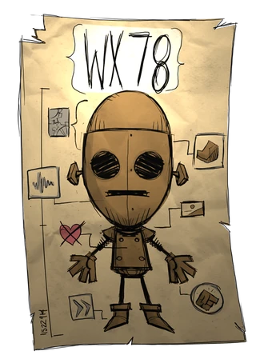

О игре:это игра про суровое выживание.Если вы проиграите в этой игре
то вам придется начинать выживание заново но это можно останвить с помощью данных предметов:
Алтарь
амулет
Мясное чучело
еще не советую быть в темноте потомучто в темноте вас убьет чарли буквально за два удара
Времена года:
В неголодайке есть четыре времени года:зима,лето,осень и весна (мой самый не любимый)
в конце каждого времени года приходит босс который очень хочет вас убить или сломать вашу базу.
Но есть и плюсы:весной нужно садить овощи зимой есть иглу а там и мак бивень и если его убить то может выпасть бивень а из него трость а она очень полезна в боссфайтах
Осенью надо путешествовать,а летом надо иследовать пещеры Это лучшие тактики прожить год но так у всех сезонов есть большие минусы:осень это лучшее время года,зима она сложная потому что вы замерзаете
весна похожая на осень но очень много дождей и молний и лето оно похоже на зиму.
эта игра очень сложная и этой информации не хватит что бы проити ее
и советую посмотреть эти гайды
Персонажи
все персонажи в DST
Уилсон
150
150
200
Уилсон-ученый у которого никогда не чего не получалось из за проклятия но один раз голос из радио сказал как снять проклятие но это была ловушка и машина окозалась порталом в константу
Уиллоу
150
150
120
Уилоу жила в дедоме и ее ненавидили по ночам на нее нападали кошмары и ее спасал только ее мишка берни но один раз у нее забрали берни и на нее напали кошмары но она сожгла весь детдом и помогала максвелу но потом ушла в константу
Вольвганг
150-300
300
200
Вольвганг был очень сильным но на одном выступление он якобы поднял слона на он это оказался механизм и зрители это увидили и Вольвганг опозорился один раз максвелл предложил ему стать нереально сильным но он попадет в константу
Венди
150
150
200
У Венди погибла сестра и максвелл предложил ей попасть в константу и там будет ее сестра в виде призрака
WX-78

125-575
120-435
150-450
WX-78-был бездушным роботом который помогал максвелу но потом от него захотели избавится и выкинули в константу но винона его починила
Уикерботом
125
150
250
Уикерботом была библеотекарем и очень умной и знала слишком много о константе и из за этого максвелл сказал Уиллоу что бы она сожгла библеотеку и максвелл предложил что бы она все запомнила но попала в константу
Вуди
150
150
200
Вуди дровосек у которого погибла жена и максвелл предложил ему уити в константу и он сможет разговаривать с женой в виде топора
Вес
75
75
75
Вес был очень не везучем но пытался сделать счастливыми всех но один раз он пытался поймать куклу девочки но он случайно попал в константу вместо дрегого человека он самый слабый персонаж
Максвелл
75
150
200
Максвелл-главный антаганист дс он все это создал но если мы пройдем режим приключений то он сам поподет в константу и станет персонажем